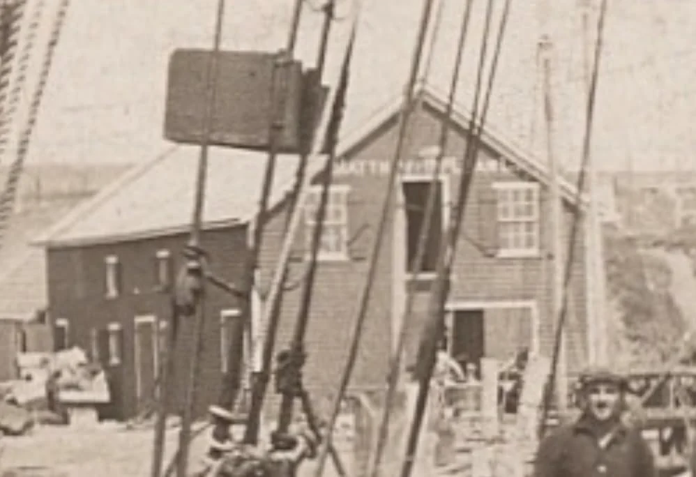
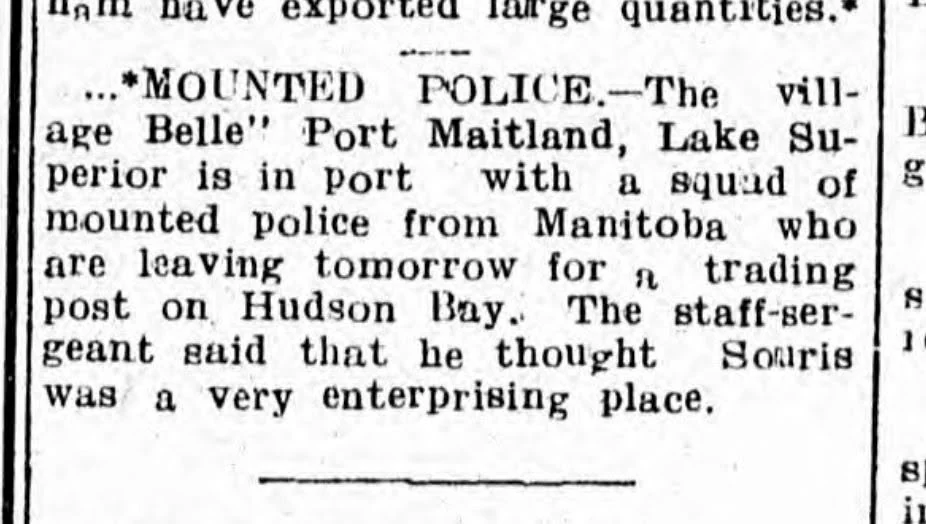
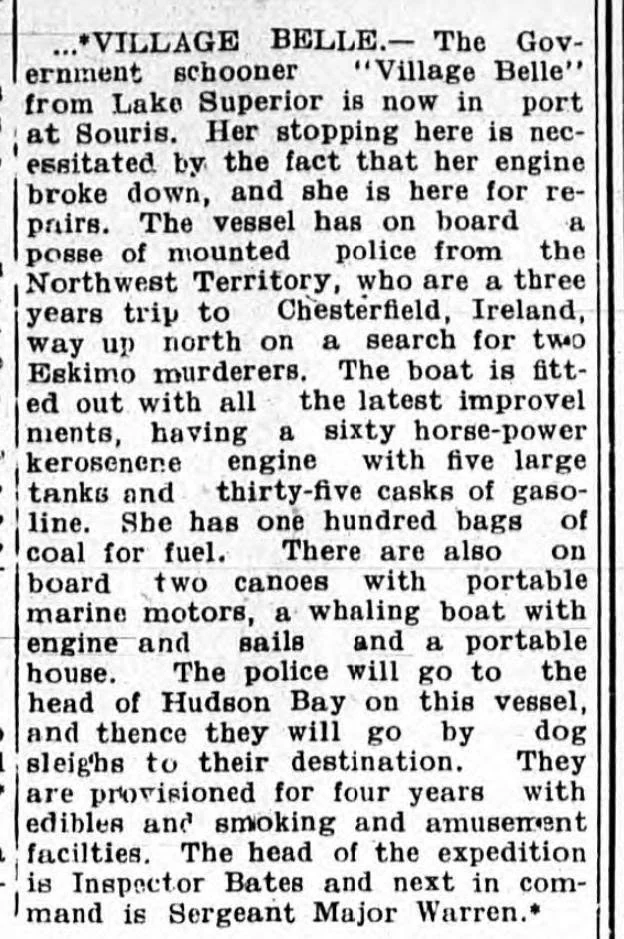

“Hope We Have Got Rid of the Hoodoo”
On August 8, 1914, Inspector Walter James Beyts was in Souris because something had gone wrong. He had sailed from Halifax bound for Hudson Bay. He was bringing four men, counting himself, to establish a police post at Baker Lake and find out how two travellers had died at Bathurst Inlet. A week into the voyage, what he needed was somebody to fix the engine.

During the stop somebody took this photograph and made a postcard of it. The striking thing is the loose grouping of the men. Two men sit among the barrels in the foreground; farther back, two stand beneath the rigging in shirtsleeves. There is no row of uniforms or caption telling us who is who. Nobody needed to supply a ship’s name for the recipient. Beyts used what little room he had on the back to tell her what was holding them up.
Souris P.E.I. 8/8/14.
We pulled in here for repairs
to Engine. Just leaving for
B.L. Hope we have got rid
of the hoodoo. Kind
regards to all. WJB

The address reads Mrs. R. S. Knight, care of the Royal North-West Mounted Police in Regina. Inspector Reginald Spencer Knight commanded Depot Division there. His wife had a name of her own: Susan Harriet May Harris, born in Birtle, Manitoba. She married Reginald in 1904 and lived in Regina among other postings. In later life she gave her photographs to the Glenbow Archives, along with reminiscences. It’s a nice discovery to make on turning over a photograph somebody once thought to send to her. We don’t know how well she and Beyts knew one another, but “Kind regards to all” reads rather differently once you know who was to open the mail. Susan and Reginald Knight’s papers and photographs.
What Souris saw
There’s a name on the building behind the men. The pale lettering is broken up by ropes, but it fits Matthew and McLean, the Souris merchants. In June 1913, during a Commons argument over dredging, Island MP James Joseph Hughes had reason to be quite precise about the place: he distinguished the government wharf at Souris from the one belonging to Matthew and McLean. The men behind the firm were Uriah Matthew and John McLean. They had gone into business together in 1869. Their wharf and warehouses handled goods moving through eastern Prince Edward Island. Beyts’s photograph gives us a look back at their business from the deck of one of its more unusual neighbours. The sign locates the schooner on that part of the waterfront; it doesn’t show where her lines were made fast. Hughes on the two wharves · The merchants’ history.

Who took the photograph? Morley S. Acorn is a tempting name in Souris. Turn over to his night view of the lighthouse: “Acorn Photo” is written right into the image. There’s nothing comparable on the schooner card. Whoever made it, the print was ready in time for a man who described himself as “just leaving” to write on it and send it off. Beyts never says who took it.
The short newspaper notice about the visit has the staff-sergeant calling Souris “a very enterprising place.” It says the men expected to leave the next day. The longer account, in the Charlottetown Guardian of August 8, explains why they stopped. It also gives us what an Island reader might have wanted to know about fitting out a schooner for the Arctic: two canoes with portable motors, a whaling boat with sails and an engine, and a portable house. The house is the item to remember. We meet it again in a constable’s notebook.


What “B.L.” meant
Baker Lake was to be the expedition’s inland base. Bathurst Inlet, on the Arctic coast, was where the inquiry would take place. The party had left Halifax at the end of July, before the declaration of war. That timing matters on an Island where, on August 5, artillerymen had sailed from Charlottetown aboard the Cacouna. Two photographs taken in Island harbours only days apart show men leaving on quite different business.
In the spring of 1912 the American traveller Harry Radford and Thomas George Street of Ottawa had travelled north from Schultz Lake with Inuit guides and dog teams. At Bathurst Inlet, Radford entrusted a letter to one of those guides, Akulak, to carry back to the Hudson’s Bay Company trader. It described a friendly reception and the travellers’ intention to go on west. By the time news reached the police at Port Nelson in July 1913, both travellers were dead. The officer at Port Nelson could record the news. To learn what had happened after Akulak left, someone would have to go to Bathurst Inlet and hear from the people who had been there.
The August 8 clipping assumes the police were going to find two murderers. Even before the schooner sailed, Ottawa’s instructions were different. Reports reaching the government suggested that the travellers’ own actions had precipitated their deaths. The police were to take statements; if the evidence bore out those reports of provocation, the government did not intend to prosecute. The commissioner also wanted a post from which the force could bring Canadian law to communities on the coast. From Souris the enterprise looked like a single voyage. For the Inuit families who lived along its route, a police post would mean a continuing government presence. The commissioner’s account of Beyts’s orders, 1914.
The house that went north
With Beyts went Sergeant-Major Thomas Caulkin and Constables Alfred Kennedy and Ernest Pasley. Pasley kept a notebook. He and Kennedy had both served in the Royal Navy; the Village Belle had her own captain, Lockhart. There were policemen and sailors aboard. The card does not put any of their names to individual faces.
After delays on the voyage the schooner got no farther inland that season than Chesterfield Inlet. The police unloaded near the Hudson’s Bay Company post, and the schooner herself went south to winter at Port Nelson. On October 8 the wind blew down the portable house the Guardian had listed in August. By October 10 they had it up again and the stove going. Beyts’s own verdict after living in it for a winter was that ice formed on the inside of the roof. When it thawed, water ran down onto the food and bedding. A house can look very satisfactory listed among a ship’s stores in a summer newspaper.
The schooner finally reached Baker Lake in September 1915. An advance supply depot went in on the Thelon River that winter. Travel cost the party dearly. On an earlier run to Churchill, Pasley and two Inuit guides had got into the traces themselves to help pull the sledge. By the time Inspector Francis French came north to relieve Beyts in September 1916, Pasley reckoned his commander had been ill for two months. On September 16 Beyts and Pasley left Chesterfield Inlet. Caulkin stayed. The man who sent the Souris postcard never reached Bathurst Inlet. Pasley’s notebook and Beyts’s account of the house.
What the witnesses remembered
In March 1917 French and Caulkin set out from Baker Lake with four Inuit companions. They travelled with dogs and carried canoes for the open water. At Bathurst Inlet, nearly five years after the deaths, French took statements. People remembered a man named Kaniak, who had agreed to help take the travellers west. His wife had fallen on the ice and was badly hurt. He told Radford he would not leave her.
In the accounts gathered by the inquiry, Radford struck Kaniak about the head with the handle of a dog whip. Street tried to restrain Radford. People watching feared for Kaniak’s life, and men intervened and killed Radford. When Street ran toward the loaded sled, they feared he was going for a rifle. He too was killed. The distinction the witnesses made between the two travellers matters: they remembered Street trying to stop the assault. David F. Pelly’s reconstruction from the testimony and expedition records.
French’s party was back at Baker Lake in January 1918. The commissioner reported “great provocation.” In keeping with the instructions issued before Beyts left Halifax, French made no arrests. There was no trial. It had taken years to hear the accounts of people whom an Island newspaper, before a single witness had been interviewed by this patrol, had already judged. The commissioner’s finding and the government’s instructions, 1918 report.
Turn the card picture-side up again. The barrels are still on deck. The sail is furled. Through the ropes you can just make out the merchant’s name. I like this photograph best for the one thing none of the official reports could give us: what Beyts thought worth telling Susan Knight while he still expected to make Baker Lake that season. The engine had given them trouble. They were just leaving. He hoped they had got rid of the hoodoo.
They hadn’t.